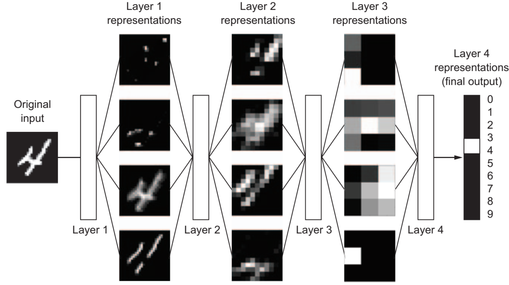

Building a Neural Network from Scratch
In this project, I build an image-classification neural network using only NumPy and mathematics.

Good projects begin with a question worth exploring.
In this project, I build an image-classification neural network using only NumPy and mathematics.

In this project, I build a RNN using only NumPy and some math, and it will be used to generate text.